Invariance - the key feature for model reduction
Contents
Consider a dynamical system of the form (due to George Haller)
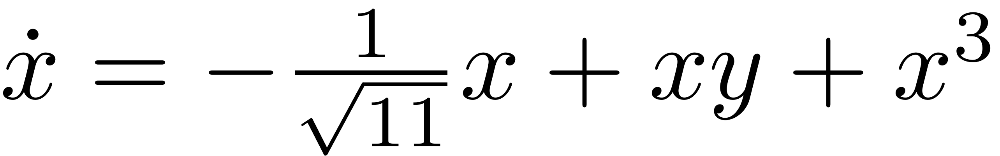
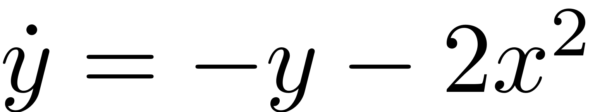
The linear part of the system reads
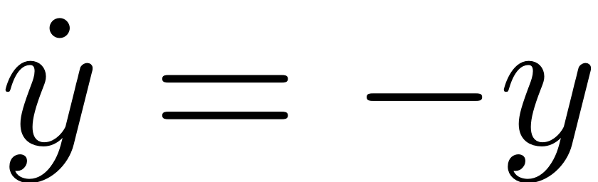
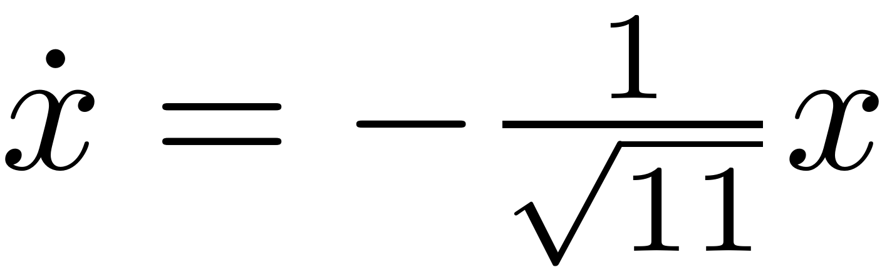
and has an asymptotically stable fixed point at 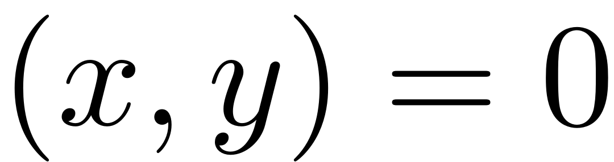. The spectral subspaces
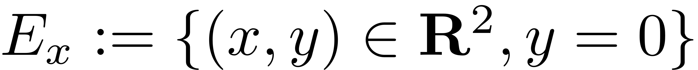
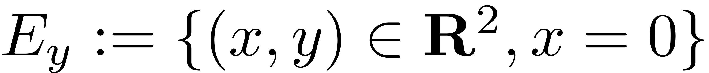
are invariant under the flow of this linear dynamical system.
Projection based ROM
In order to produce a ROM for the 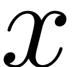 coordinate one might thus opt to project the system equations onto 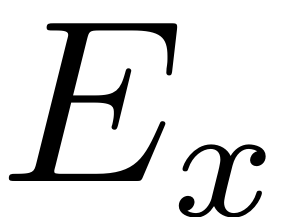, as any trajectory on it is also a trajectory of the full linear system. As a resulting model one obtains
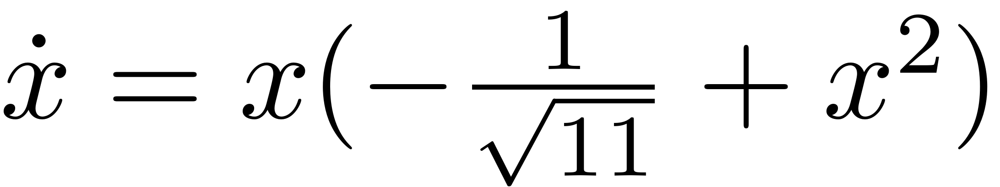
Thus, from the projected equations we would conclude that the full system has three fixedpoints,
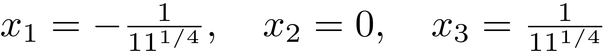
For this simple model we can, howerver, try to verify these results directly via the full dynamical system. We set 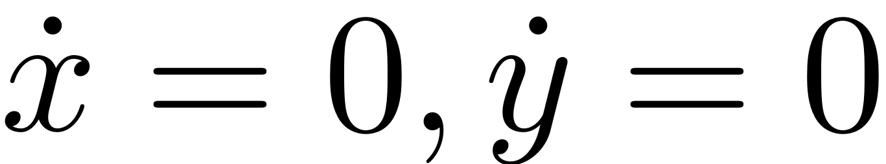 and get
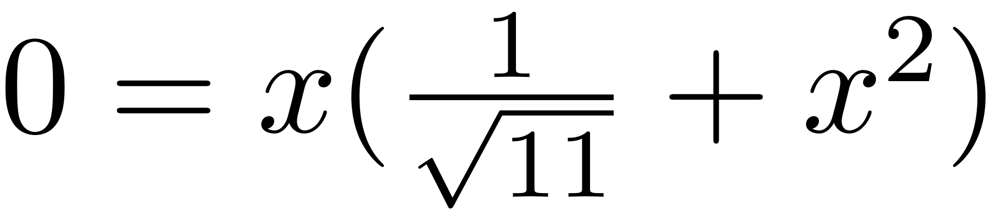
So the full system only has a single fixedpoint at 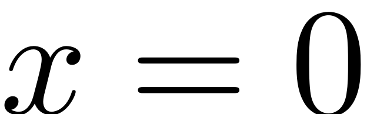. Indeed, as shown in the following figure, the ROM clearly does not describe the full system behaviour.
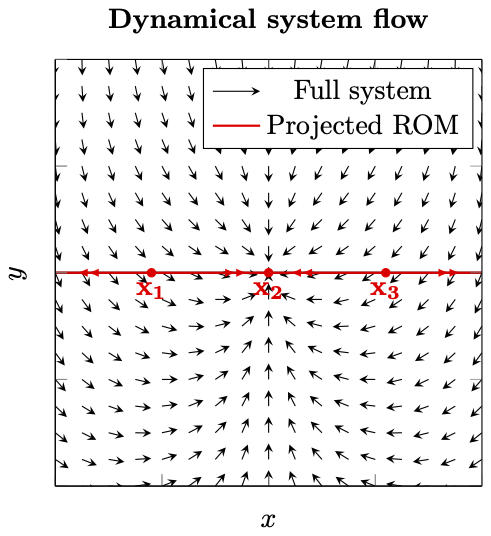
So what went wrong?
The key feature that our method is missing is the invariance property. A set is called invariant, if all trajectories that start in it, remain confined to it for all times. So these invariant sets can be considered independently of the remaining dynamical system. Any dynamics that are observed in an invariant set also exist in the full system.
is not an invariant subspace for the full nonlinear dynamical system. Indeed, take any point 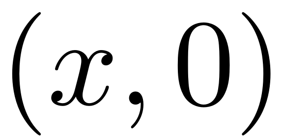 in and plug it into the full ODE. Due to the coupling terms, there is a finite contribution to the flow in 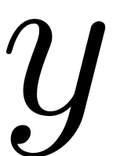 direction via
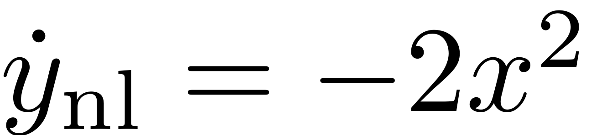
which immediately pushes the trajectory out of . The trajectories of the projected dynamical system on thus are not trajectories of the full system and indeed even the qualitative behaviour is very different, even exhibiting artificial fixed points.
So when using projective ROMs even ignoring a single DOF can lead to erroneous results with fictitious fixedpoints. In order to avoid these problems and for rigorous and exact model reduction, the modelling subspace thus has to be invariant. In the context of nonlinear dynamical system, the objects which fulfill this property are invariant manifolds, which perturb from the linear spectral subspaces when nonlinearities are added to a linear dynamical system.
Even ignoring a single mode can lead to completely erronous conclusions when using projection based techniques for model reduction, as shown in this example!
ROM on Spectral Submanifold (SSM)
We now proceed to construct a ROM on the unique smoothest invariant manifold (SSM), which is nonlinear and perturbs smoothly from . For this we set
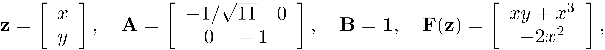
clear DS S A = [-1/sqrt(11) 0 ; 0 , -1]; B = eye(2); Fnl(2).coeffs = [1 0; 0,-2]; Fnl(2).ind = [1,1 ; 2,0]; Fnl(3).coeffs = [1;0]; Fnl(3).ind = [3,0];
Now we create an instance of the dynamical system class
DS = DynamicalSystem(); set(DS,'A',A,'B',B,'F',Fnl); set(DS.Options,'notation','multiindex'); % Use multi-index notation
A Linear Modal analysis sets up the stage for the SSM computation.
[V,D,W] = DS.linear_spectral_analysis();
The first 2 nonzero eigenvalues are given as -0.3015 -1.0000
We choose to construct a ROM on the invariant manifold tangent to . Thus we choose the first mode to be the master mode.
S = SSM(DS); set(S.Options,'reltol',0.1,'notation','multiindex') masterModes = 1; % master mode order = 10; % SSM expansion order S.choose_E(masterModes);
No (near) outer resonances detected in the (truncated) spectrum sigma_out = 3 No (near) inner resonances detected in the (truncated) spectrum sigma_in = 3
As no resonances between the master and restricted modes are detected, the existence and uniqueness of the SSM is guaranteed. The spectral quotient is 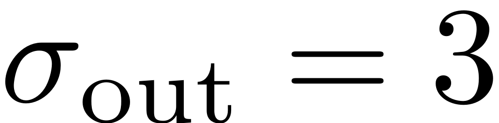, which implies that pushing the approximation past order 3 guarantees that the computed manifold corresponds to the primary SSM which is sought. We thus may continue with the computation and compute the autonomous SSM.
[W0,R0] = S.compute_whisker(order); % compute of SSM
Manifold computation time at order 2 = 00:00:00 Estimated memory usage at order 2 = 5.36E-03 MB Manifold computation time at order 3 = 00:00:00 Estimated memory usage at order 3 = 5.70E-03 MB Manifold computation time at order 4 = 00:00:00 Estimated memory usage at order 4 = 6.08E-03 MB Manifold computation time at order 5 = 00:00:00 Estimated memory usage at order 5 = 6.49E-03 MB Manifold computation time at order 6 = 00:00:00 Estimated memory usage at order 6 = 6.94E-03 MB Manifold computation time at order 7 = 00:00:00 Estimated memory usage at order 7 = 7.41E-03 MB Manifold computation time at order 8 = 00:00:00 Estimated memory usage at order 8 = 7.91E-03 MB Manifold computation time at order 9 = 00:00:00 Estimated memory usage at order 9 = 8.45E-03 MB Manifold computation time at order 10 = 00:00:00 Estimated memory usage at order 10 = 9.01E-03 MB
Now, to get better understanding of the invariance property, we create a visualisation of the unstable SSM. For this we choose a set of parametrisation coordinates which are mapped to the full phase space of the dynamical system.
% Dynamics on SSM lamdMaster = D(masterModes,masterModes); t = linspace(0,20,100); p1 = 0.25*exp(lamdMaster*t); p2 = -0.25*exp(lamdMaster*t); % mapping to full system z1 = reduced_to_full_traj(t,p1,W0); z2 = reduced_to_full_traj(t,p2,W0); z = [z1 z2(:,end:-1:1)]; % plot SSM h = figure; plot(z(1,:),z(2,:),'-','LineWidth',1.5,'Color',"#77AC30"); xlabel('x'); ylabel('y'); set(gca,'fontsize',16); set(gca,'LineWidth',1.5); grid on;box on;hold on;axis tight; legend('SSM $\mathcal{O}(10)$','Interpreter','latex');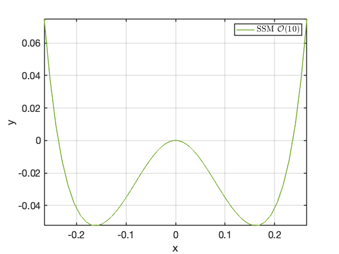
Next we empirically verify the invariance of the SSM. For this we choose an initial condition on the SSM, and apply the flow of the full dynamical system. Then this condition is perturbed and the evolution of nearby trajectories is studied.
As the SSM is computed as a series expansion, it is local in nature. Pushing the approximation to higher orders, the degree of convergence of the approximation to the SSM gets better and better. As a consequence of this expansion, the approximation of the SSM is closer to the actual SSM, the closer to the origin one observes it. Thus, to showcase the invariance of the SSM, we have chosen to map it to the full space in a small region around the fixed point of interest. To decrease the invariance error higher order expansions of the SSM can be sought.
z0 = z(:,2); plot(z0(1),z0(2),'bx','MarkerSize',10) odefun = @(t,x) DS.odefun(t,x); [t0, x0] = ode45(odefun, [0,10], z0); plot(x0(:,1),x0(:,2),'b-','LineWidth',1.5); grid on legend('SSM $\mathcal{O}(10)$', 'Full system trajectory','','Interpreter','latex')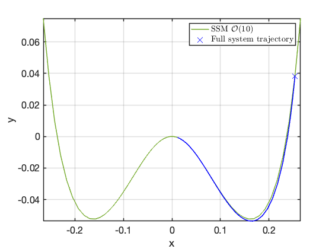
Effect of perturbations
perturbations = {[-0.0125;0], [-0.025;0], [0.025;0], [0.0125;0]};
for i = 1:4
z0 = z(:,2) + perturbations{i};
plot(z0(1),z0(2),'bx','MarkerSize',10)
odefun = @(t,x) DS.odefun(t,x);
[t0, x0] = ode45(odefun, [0,10], z0);
plot(x0(:,1),x0(:,2),'b-','LineWidth',1.5); grid on
end
legend('SSM $\mathcal{O}(10)$', 'Full system trajectories','','','','','Interpreter','latex')
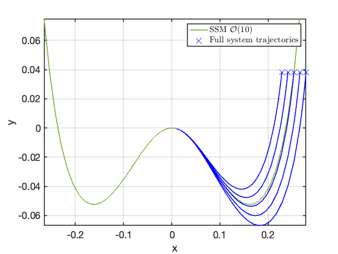 Note how the trajectories which are launched away from the manifold decay to it as they approach the fixedpoint. Due to the invariance of the manifold, orbits on the manifold correspond to orbits of the full dynamical system which makes the ROM exact.